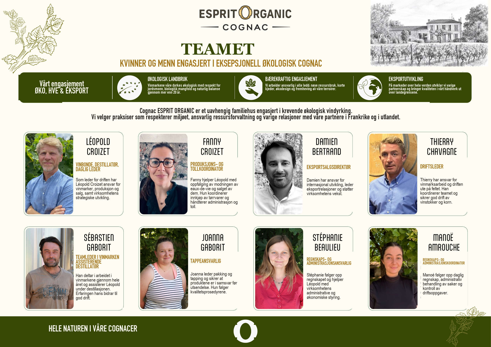

Teamet
Kvinner og menn engasjert i eksepsjonell økologisk Cognac.
Cognac Esprit Organic er et uavhengig familiehus engasjert i krevende økologisk vindyrking.
- Léopold Croizet, vinbonde, destillatør og daglig leder.
- Fanny Croizet, produksjons- og tollkoordinator.
- Damien Bertrand, eksportsalgsdirektør.
- Thierry Chavagne, driftsleder.
- Sébastien Gaborit, teamleder i vinmarken og assisterende destillatør.
- Joanna Gaborit, tappeansvarlig.
- Stéphanie Beaulieu, regnskaps- og administrasjonsansvarlig.
- Manoé Amrouche, regnskaps- og administrasjonskoordinator.
